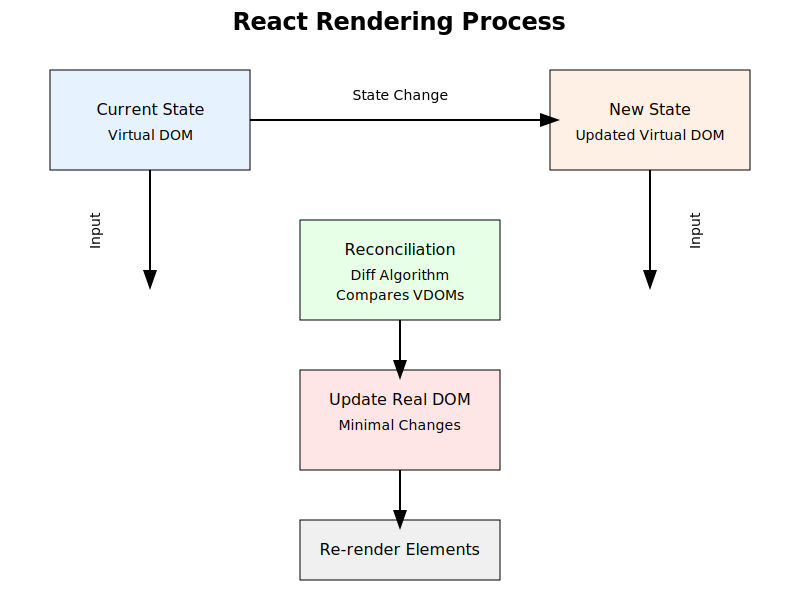

3.1 React-Komponenten / Funktionskomponenten erstellen
Rerendering (4)

Stepan Rutz
2024
Welche Vorkenntnisse sind vorhanden?
Unterlagen zum Kurs
React DevTools ist ein Browser-Plugin, das es ermöglicht, React-Komponenten im Browser zu inspizieren.
Es zeigt die Komponentenstruktur und den Zustand der Komponenten an.
Es ermöglicht auch das Ändern des Zustands von Komponenten.
Verfügbar für Chrome, Firefox und Edge.
Chrome: https://chrome.google.com/webstore/detail/react-developer-tools/fmkadmapgofadopljbjfkapdkoienihi
Nach der Installation kann das Plugin im Browser geöffnet werden.
Es zeigt die Komponentenstruktur und den Zustand der Komponenten an.
Es ermöglicht auch das Ändern des Zustands von Komponenten.
Es kann von der React-Sicht in die DOM-Sicht gewechselt werden.
import React, { useState } from 'react';
export function Counter() {
const [count, setCount] = useState(0)
return (
<div>
<button onClick={() => setCount(count + 1)}>Count : {count}</button>
</div>
)
}useState ist ein Hook, der es ermöglicht,
Zustände in Funktionskomponenten zu verwenden.use beginnen, sind sogenannte
Hooks.Die Hauptvorteile von React sind:
Das React-Ökosystem ist sehr groß und vielfältig, React hat die größte Community und die meisten Ressourcen.
React ist sehr performant.
React ist deklartiv.
React ist komponentenbasiert.
Man kann in React sehr schnell(!) GUIs erstellen. Dieser Vorteil ist besonders wichtig
vite.config.js hinzu:mein-react-projekt
├── node_modules
├── src
│ ├── styles.css
│ ├── main.tsx
│ ├── App.tsx
│ ├── vite-env.d.ts
├── index.html
├── .gitignore
├── package.json
├── package-lock.json
├── README.md
├── vite.config.js
├── tsconfig.json
├── tsconfig.app.json
├── tsconfig.node.json
├── eslint.config.js
├── postcss.config.js
├── tailwind.config.js2 Scripte werden für React benötigt
react.js
react-dom.js
Diese werden via NPM installiert und dann importiert
oder können alternativ auch als Javascript Datei (von einem CDN) via Script-Tag geladen werden
pnpm-lock.yaml
anstelle der package-lock.json erstellt.yarn.lock Datei.package.json Datei enthält die Dependencies und die
Scripts eines Projekts. Die Dependencies sind in
dependencies und devDependencies unterteilt
und enthal ten die Namen und Versionen der Dependencies. Die Versionen
sind semantisch und können mit ^ oder ~
eingeschränkt werden.^1.2.3 bedeutet: 1.x.x
~1.2.3 bedeutet: 1.2.x
1.2.3 bedeutet: genau diese VersionDie package-lock.json Datei enthält die genauen
Versionen der Dependencies und wird von NPM automatisch
erstellt.
Mittels npm update wird die
package-lock.json Datei aktualisiert und die Dependencies
auf die neuesten Versionen (gemäß der SemVar) gebracht.
Mittels npm audit wird das Projekt auf
Sicherheitslücken geprüft und es werden Empfehlungen zur Behebung
gegeben. Es kann mittels –fix auch versucht werden, d ie Lücken zu
schließen. Dabei wird unter Umständen die package-lock.json
Datei aktualisiert.
NPM Check Updates ist ein Tool, das die Dependencies eines Projekts auf veraltete Versionen prüft und die neuesten Versionen anzeigt.
npm selber hat keine Funktion, um die neuesten Versionen
anzuzeigen. Dafür gibt es das Tool ncu.
npm erstellt auch nur eine neue package-lock.json
Datei, wenn die Versionen in der package.json Datei
geändert werden.
ncu kann mit ncu -u auch die
package.json Datei aktualisieren. Dabei werden auch neue
Major-Versionen angezeigt und auf Wunsch auch aktualisiert. Dabei ist
die API-Kompatibilität nicht garantiert.
ncu ohne die -u (–update) Option führt nur einen
Dry-Run aus und gibt die Änderungen aus, die bei einem Update gemacht
würden.
node-sass oder
sass installiert..css auf .scss geändert werden.LESS ist ein CSS-Präprozessor, der die Verwendung von Variablen, Mixins und Funktionen ermöglicht.
LESS wird in React Projekten mittels less
installiert.
Vite unterstützt LESS out-of-the-box. Es muss nur die Dateiendung
von .css auf .less geändert werden.
Ein Default-Export wird ohne geschweifte Klammern importiert werden und wird auf Seite des Imports mit einem beliebigen Namen versehen.
Mit geschweiften Klammern werden benannte Exports importiert. Diese Syntax erinnert an die Objekt-Destrukturierung.
Beim Importieren können die Namen der importierten Objekte
umbenannt werden. (mittels as)
Siehe auch: https://developer.mozilla.org/en-US/docs/Web/JavaScript/Guide/Modules
import eingebunden werden.react-icons oder
heroicons die Icons als Komponenten bereitstellen.create-react-app. Die von diesem Tool erstellten Projekte
verwenden Webpack.// vite.config.js
import { defineConfig } from 'vite'
import tailwindcss from '@tailwindcss/vite'
export default defineConfig({
plugins: [
tailwindcss(), // add this line
],
})// index.css oder andere Haupt-Css Datei
@import "tailwindcss";tailwind.config.js anlegenIn index.css (oder anderer Haupt-Css Datei) folgendes am Anfang einfügen:
Nach Bedarf und Gusto eigene Classes mit Tailwind Styles befüllen mittels @apply
Tailwind 4 hat eine neue Installationsmethode. Diese ist einfacher und benötigt keine PostCSS Konfiguration mehr.
Setup:
In der index.css (oder anderer Haupt-Css Datei) folgendes am Anfang einfügen:
Tailwind Merge ist eine Library, die es ermöglicht, Tailwind-Klassen zu kombinieren und zu optimieren. Es entfernt doppelte Klassen und optimiert die Reihenfolge der Klassen. Dadurch kann man Classes von außen hinzufügen und Tailwind Merge kümmert sich um die Optimierung. Das Framework Shadcn bieter diese Funktionalität durchgehend an.
Installation:
Utility-Funktion:
Komponente mit Tailwind Merge Unterstützung, die CSS-Klassen können nun von außen hinzugefügt werden und Tailwind Merge kümmert sich um das zusammenfügen. Die Klassen werden in der Reihenfolge zusammengefügt, in der sie übergeben werden. Doppelte Klassen werden entfernt.
export function BoxPanel({children, className}: {children: ReactNode, className?: string}) {
return (
<div className={cn('bg-white shadow-md rounded-lg p-4', className)}>
{children}
</div>
)
}
Framer Motion ist eine Library für React, die es ermöglicht, Animationen zu erstellen.
Installation:
https://github.com/romboHQ/tailwindcss-motion
https://github.com/formkit/auto-animate
React-Anwendungen bestehen aus Komponenten
Komponenten sind wiederverwendbare Bausteine, die eine bestimmte Funktionalität oder ein bestimmtes Aussehen haben
Früher wurden Klassen-Komponenten verwendet, heute werden Funktions-Komponenten verwendet
Komponenten sind Funktionen, die JSX zurückgeben und bestehen aus:
map-Funktion
durchgeführt werden.import React from 'react';
import { Text, TextStyle } from 'react-native';
type BigTextProps = {
style: TextStyle,
children: string[]
}
export function BigText(props : BigTextProps) {
const {style = {fontSize: 20}, children} = props
return <div style={style}>{children.map((child, index) => <Text key={index}>{child}</Text>)}</div>;
}/* */ oder // bis zum
Zeilenende.onClick anstelle von onclick
oder className anstelle von class).className anstelle von class,
htmlFor anstelle von for
(JavaScript-Keywords).<div style={{ color: 'red' }}>).useState
verwaltet.useState gibt ein Array zurück, das den
aktuellen Status und eine Funktion zum Setzen des Status enthält.use benannt.
Der Rerendering-Prozess in React ist ein zentraler Bestandteil des Frameworks. Er beschreibt, wie React die Benutzeroberfläche aktualisiert, wenn sich der Zustand oder die Eigenschaften einer Komponente ändern.
Die Grundüberlegung ist, dass React den virtuellen DOM (Document Object Model) verwendet, um Änderungen effizient zu verfolgen und nur die Teile der Benutzeroberfläche zu aktualisieren, die sich tatsächlich geändert haben.
Für die React-Entwicklung bedeutet dies:
Komponenten werden nur in Gänze neu gerendert. Die Komponenten “hören” auf Veränderungen in ihren Props und ihrem Zustand. Wenn sich eine der beiden Eigenschaften ändert, wird die gesamte Komponente neu gerendert.
Somit sind die Componenten Listener für ihre eigenen Props und ihren eigenen Zustand.
In React erstellt man Komponenten um diese in anderen Komponenten wiederzuverwenden.
Beispiel:
Komponente für Links:
Komponente für Benutzer-Bilder:
Komponente für verlinkte Benutzer-Bilder:
Erstellen von Komponenten, die nur eine Aufgabe erfüllen
Komponenten sind möglichst klein
Einfache Komponenten haben keinen Zustand, sondern nur Props oder Children
Custom Hooks um Logik zentral zu verwalten und reaktiv wiederzuverwenden
export und
export default.In diesem Beispiel wird die Komponente Komponente
exportiert. Um die Komponente in einer anderen Datei zu verwenden, muss
sie importiert werden.
// Komponente.tsx
const Komponente = () => {
return <div>Ich bin eine Komponente</div>;
}
export default Komponente;In diesem Beispiel wird die Komponente Komponente als
Default-Export exportiert. Um die Komponente in einer anderen Datei zu
verwenden, muss sie importiert werden.
// App.tsx
import Komponente from './Komponente';
const App = () => {
return (
<div>
<Komponente />
</div>
);
}this-Kontext nicht verändert wird.this-Kontext in Funktionskomponenten nicht verwendet
wird.{} ausgegeben werden.oder äquivalent
Beispiel:
const person = {name: 'Max', age: 30};
const {name, age} = person;
console.log(name); // Max
console.log(age); // 30Das erspart das Schreiben von props.name und
props.age:
Boolsche Props werden als optional typisiert, damit beim Aufruf
der Komponente nicht immer ein Wert übergeben werden muss. Es wird also
die bool’sche Prop auf true gesetzt, wenn sie übergeben
wird. Ein setzen auf false ist nicht notwendig, es reicht,
wenn die Prop nicht übergeben wird.
Wenn der Wert der Props dynamisch ist, kann der Wert auch
explizit auf true oder false gesetzt
werden.
Verwendung:
Wenn man Komponenten ineinander verschachtelten möchte, dann kann man dieses in der von HTML gewohnten Art und Weise tun:
In der Wrapper-Komonente kann man dann die
children-Props verwenden um die verschachtelten Komponenten
anzuzeigen:
children ist ein spezielles Attribut, welches alle
verschachtelten Komponenten enthält. React stellt diesen Prop-Typ
automatisch zur Verfügung.
Wenn children wie oben als required Feld definiert ist, dann muss es auch immer übergeben werden. Manchmal ist es gewünscht, dass children optional sind. In diesem Fall kann man den Prop-Typ wie folgt mittels eines ? als optional definieren:
Es gibt auch einen Type-Helper PropsWithChildren, der
die Typisierung von children-Props vereinfacht:
Manchmal möchte man Standard-HTML Attribute des obersten HTML-Tags
einer Komponente an diese übergeben. Dafür gibt es bei React die
Typdefinitionen ComponentProps und
ComponentPropsWithRef-
Beispiel:
Beispiel für die Verarbeitung von Ereignissen in React:
Ereignisse können auch inline in JSX verarbeitet werden:
useState() ist eine Funktion, die es ermöglicht,
Zustände in Funktionskomponenten zu verwenden.
Alle Funktionen die mit use beginnen, sind
sogenannte Hooks.
“Hello-World” Beispiel: “Counter”
useState() gibt ein Array zurück.Zustandsverwaltung: Der useState Hook bietet eine Möglichkeit, lokale Zustandsvariablen in einer funktionalen Komponente zu deklarieren. Dieser Zustand wird dann innerhalb der Komponente gehalten und kann im gesamten Lebenszyklus der Komponente verwendet und verändert werden.
Re-Rendern der Komponente: Immer wenn der Zustand durch die Setter-Funktion, die von useState zurückgegeben wird, aktualisiert wird, veranlasst React die Komponente dazu, sich neu zu rendern. Das bedeutet, dass die Funktion der Komponente erneut aufgerufen wird mit den aktualisierten Zustandsdaten.
Asynchrones Update: Die Aktualisierung des Zustands durch die Setter-Funktion ist asynchron. Das bedeutet, dass die Zustandsaktualisierung und das erneute Rendern der Komponente nicht sofort geschehen. React plant diese Updates effizient ein, basierend auf dem Browser-Rendering-Zyklus und anderen Updates, die möglicherweise gleichzeitig stattfinden.
Bindung an den DOM: Wenn die Komponente neu gerendert wird, vergleicht React den neuen Output (das JSX) mit dem vorherigen DOM. Änderungen werden dann effizient in das tatsächliche DOM übernommen, so dass nur die Teile des DOMs aktualisiert werden, die sich verändert haben. Dieser Prozess wird als “Reconciliation” bezeichnet und ist der Kern von Reacts reaktiven Fähigkeiten.
useState() kann auch mit Objekten und Arrays verwendet
werden.import { useState } from 'react';
export function CounterWithObject() {
const [state, setState] = useState({ count: 0, name: "Peter" })
return (
<div>
<button onClick={() => setState({ count: state.count + 1, name: state.name })}>Count : {state.count}</button>
<button onClick={() => setState({ count: state.count, name: "Hans" })}>Change Name</button>
</div>
)
}setState() übergibt, würde React nicht erkennen, dass sich
der Zustand geändert hat. Es bleibt schließlich das gleiche Objekt.=== Operators. Dieser Operator
vergleicht die Referenzen der Objekte. Nur wenn sich die Referenz
ändert, wird der Zustand neu gerendert.useState() kann auch mit Arrays verwendet werden.import { useState } from 'react';
export function CounterWithArray() {
const [state, setState] = useState([0, 0])
return (
<div>
<button onClick={() => setState([state[0] + 1, state[1]])}>Count 1: {state[0]}</button>
<button onClick={() => setState([state[0], state[1] + 1])}>Count 2: {state[1]}</button>
</div>
)
}useState() kann auch eine Funktion als Initial-State
übergeben werden.setState() Funktion
geändert wird, dann wird der Zustand nicht sofort geändert. Der Zustand
wird erst nach dem Rendern der Komponente geändert.setState() kann auch eine Funktion übergeben werden.
Diese Funktion erhält den aktuellen Zustand als Parameter und gibt den
neuen Zustand zurück.setState() ist nützlich, wenn
der neue Zustand vom alten Zustand abhängt.setState() liefert immer den
aktuellen Zustand, auch wenn der Zustand sich in der Zwischenzeit
geändert hat.setState() liefert den
aktuellen Zustand nicht. Sondern den Zustand, der zum Zeitpunkt des
Aufrufs von setState() aktuell war.setState() zu übergeben.import { useState } from 'react';
export function CounterWithObject() {
const [state, setState] = useState({ count: 0, name: "Peter" })
return (
<div>
<button onClick={() => setState({ count: state.count + 1, name: state.name })}>Count : {state.count}</button>
<button onClick={() => setState({ count: state.count, name: "Hans" })}>Change Name</button>
</div>
)
}... kann verwendet werden, um
Objekte und Arrays zu kopieren.import { useState } from 'react';
export function CounterWithObjectAndSpread() {
const [state, setState] = useState({ count: 0, name: "Peter" })
return (
<div>
<button onClick={() =>
setState({ ...state, count: state.count + 1 })}>Count : {state.count}</button>
<button onClick={() => setState({ ...state, name: "Hans" })}>Change Name</button>
</div>
)
}const obj1 = { a: 1, b: 2 }
const obj2 = { ...obj1 }
obj2.a = 3
console.log(obj1) // { a: 1, b: 2 }
console.log(obj2) // { a: 3, b: 2 }setState() in einer Schleife oder Bedingung aufgerufen
wird.setState() in einer
Funktion aufgerufen wird, die bei jedem Rendern aufgerufen wird.useState() kann auch mit Typen verwendet werden.const [count, setCount] = useState<number>(0)
// gleich der obigen Zeile, da Typescript den Typ ableiten kann
const [count, setCount] = useState(0) Beispiel mit einem Objekt-Typen:
useState
useState<StateType | undefined>() : State Variable from Typ “StateType” oder undefined
export function MyComponent(props: PropsType) … Props haben den Typ PropsType. Auch intersectable mit React.PropsWithChildren
const onClick = (e: React.MouseEvent
const style: CSSProperties = { } : React.CSSProperties ist der richtige Typ für React Styles
import React from 'react';
interface PanelProps {
children: React.ReactNode;
}
export function Panel({ children }: PanelProps) {
return (
<div className="bg-white shadow-md p-4">
{children}
</div>
);
}import { useState } from 'react';
function Parent() {
const [count, setCount] = useState(0);
function increment() {
setCount(count + 1);
}
return (
<div>
<h1>Parent</h1>
<Child increment={increment} />
</div>
)
}
function Child({ increment }: { increment: () => void }) {
return (
<div>
<h2>Child</h2>
<button onClick={increment}>Increment</button>
</div>
)
}Eine Zweiwegbindung (“Two Way Binding”) ermöglicht es, dass die Eingabe in einem Eingabefeld sofort in der Anzeige aktualisiert wird.
In React kann eine Zweiwegbindung durch die Verwendung von
useState() und dem onChange-Event realisiert
werden.
Beispiel: Eine Komponente, die einen Eingabewert speichert und anzeigt:
import { useState } from 'react'
export function InputComponent() {
const [value, setValue] = useState('')
return (
<div>
<input
type="text"
value={value}
onChange={(e) => setValue(e.target.value)}
/>
<p>{value}</p>
</div>
)
}map() ausgegeben werden.?
ausgegeben werden.&&&&
ausgegeben werden.Es kommt vor, dass man in Komponente wenn zum Beispiel Daten noch nicht geladen sind, einen Ladeindikator anzeigen möchte. Dabei wird häufiger wenn eine Prop oder eine State Variable noch nicht gesetzt ist, per Return-State anderes JSX zurückgegeben wird.
ACHTUNG: Die Rules of Hooks verletzt man relativ leicht, wenn man Early-Returns verwendet. Es ist wichtig, dass Hooks immer an oberster Stelle in der Komponente verwendet werden.
interface DataProps {
data: string | null;
}
export function DataComponent({ data }: DataProps) {
if (!data) {
return <div>Loading...</div>;
}
return <div>{data}</div>;
}TailwindCSS hat sich als Standard für das Styling von React-Komponenten etabliert. Auch in anderen Frameworks wie Angular oder Vue.js wird TailwindCSS verwendet.
In ReactNative gibt es ein ähnliches Framework namens NativeWind, das auf TailwindCSS Styles basiert. Obwohl die Styles in ReactNative nicht direkt mit CSS arbeiten, können viele der TailwindCSS-Klassen verwendet werden.
TailwindCSS ist ein Utility-First CSS-Framework, das viele vorgefertigte Klassen für das Styling von Elementen bereitstellt.
TailwindCSS kann immer zusätzlich zu anderen Styling-Methoden wie CSS-Modulen oder Inline-Styles verwendet werden. Von daher kann man TailwindCSS auch nur für bestimmte Komponenten verwenden und zusätzlich mit ins Projekt aufnehmen.
.module.css.export function InlineStyle() {
return (
<div style={{ fontSize: 20, color: 'red' }}>
<h1>Meine Komponente</h1>
</div>
)
}{} sind für JSX, die zweiten
{} sind für das JavaScript-Objekt.import { useState } from 'react';
export function DynamicStyle() {
const [fontSize, setFontSize] = useState(20)
const style = {
fontSize: fontSize
}
console.log("rendering mit fontSize: ", fontSize)
return (
<div>
<h1 style={style}>Meine Komponente</h1>
<button onClick={() => setFontSize(fontSize + 1)}>Größe erhöhen</button>
</div>
)
}Ein weiteres, sehr alter, Paket, welches das Styling von React-Komponenten vereinfacht, ist Emotion.
Emotion ist ein CSS-in-JS-Bibliothek, die es ermöglicht, CSS direkt in JavaScript zu schreiben.
https://www.digitalocean.com/community/tutorials/react-react-emotion
Ein weiteres, Paket, welches das Styling von React-Komponenten alternativ gestattet, ist “Styled Components”.
https://styled-components.com/
Styled Components ist ebenfalls eine CSS-in-JS-Bibliothek, die es ermöglicht, CSS direkt in JavaScript zu schreiben. Außerdem können CSS-Only-Wrapper Komponenten so im Code definiert werden.
Die schreiben von CSS funktioniert hierbei über Tagged-Template-Literals.
/ Create a Title component that'll render an <h1> tag with some styles
const Title = styled.h1`
font-size: 1.5em;
text-align: center;
color: #BF4F74;
`;
// Create a Wrapper component that'll render a <section> tag with some styles
const Wrapper = styled.section`
padding: 4em;
background: papayawhip;
`;
// Use Title and Wrapper like any other React component – except they're styled!
render(
<Wrapper>
<Title>
Hello World!
</Title>
</Wrapper>
);In React wird eine App in Komponenten aufgeteilt.
Komponenten können in verschiedenen Dateien definiert werden. Es können aber auch mehrere Komponenten in einer Datei definiert werden.
Pro Datei kann es nur einen default-Export geben. (Wichtig, da manche Frameworks wie Router für Hauptseiten den Default-Exports verwenden)
Komponenten können auch als lokale Funktion innerhalb einer anderen Komponente definiert werden. Davon ist jedoch ABZURATEN, da bei jedem Re-Rendering der Elternkomponente die lokale Funktion neu erstellt wird. Das kann zu unerwünschtem Verhalten führen und kostet auch Zeit.
componentDidMount, componentDidUpdate oder
componentWillUnmount.useEffect-Hook
behandelt werden.useEffect kann auch eine Cleanup-Funktion zurückgeben.
Diese Cleanup-Funktion wird ausgeführt, wenn die Komponente unmountet wird.
useEffect kann auch mehrere Cleanup-Funktionen zurückgeben.
Cleanup-Funktionen sind wichtig, um Resourcen freizugeben.
Cleanup Code sollte das Gegenteil des Effekts tun und das System wieder in den ursprünglichen Zustand versetzen.
Beispiel:
import { useEffect, useState } from 'react';
export function UseEffectStaleClosure() {
const [count, setCount] = useState(0)
useEffect(() => {
const interval = setInterval(() => {
console.log(count)
}, 1000)
return () => clearInterval(interval)
}, [])
return <div><h1>UseEffectStaleClosure</h1></div>
}Beispiel:
Beispiel:
Beispiel:
Keine Abhängigkeiten: Der Effekt wird nur einmal ausgeführt.
Leere Abhängigkeiten: Der Effekt wird bei jedem Rendern ausgeführt.
Abhängigkeiten: Der Effekt wird bei Änderungen der Abhängigkeiten ausgeführt.
ACHTUNG: Insbesondere die 2. Variante kann zu endlosen Renderings führen und sollte vermieden werden. Außerdem ist es eine schlechte Praxis, da der Effekt bei jedem Rendern ausgeführt wird. React entscheidet über die Re-Rendering-Häufigkeit und kann nicht direkt durch den Entwickler beeinflusst werden.
Beispiel:
type QuoteType = { id: number; quote: string; author: string }
function Quotes() {
const [quotes, setQuotes] = useState<QuoteType[]>([])
useEffect(() => {
(async () => {
const response = await fetch('https://dummyjson.com/quotes')
const data = await response.json()
setQuotes(data.quotes as QuoteType[])
})()
}, [])
return <ul>
{quotes.map((q) => <li key={q.id}>{q.quote} - {q.author}</li>)}
</ul>}
memo() cached das Ergebnis einer Komponente und verhindert erneutes Rendern. Das gilt für die Component selbst und alle Kinder-Komponenten. (Auch für alle indirekte Kinder)
memo() basiert auf der Annahme, dass die Komponente bei gleichen Props immer das gleiche Ergebnis zurückgibt und keine Seiteneffekte hat.
memo() ist eine High Order Component (HOC) und wird wie folgt verwendet:
Wie schon Don Knuth gesagt hat. “Premature optimization is the root of all evil”
memo() ist oftmals nicht notwendig, da Re-Rerendering in React nicht so teuer ist.
memo() sollte nur verwendet werden, wenn es wirklich notwendig ist, da es wirklich voraussetzt, dass die Komponente keine Seiteneffekte hat und bei gleichen Props immer das gleiche Ergebnis zurückgibt.
<React.Fragment>.import React from 'react';
import { Text, TextStyle } from 'react-native';
type BigTextProps = {
style: TextStyle,
children: string[]
}
export function BigText(props : BigTextProps) {
const {style = {fontSize: 20}, children} = props
return <React.Fragment>{children.map((child, index) => <Text key={index}>{child}</Text>)}</React.Fragment>;
}
import React from 'react'
function withCounter(Component) {
return function WithCounter(props) {
const [count, setCount] = React.useState(0)
return <Component count={count} setCount={setCount} {...props} />
}
}withCounter
erstellt, die eine Komponente als Argument entgegennimmt und eine neue
Komponente zurückgibt.import React from 'react'
const CounterContext = React.createContext(0)
export function CounterProvider({ children }) {
const [count, setCount] = React.useState(0)
return (
<CounterContext.Provider value={{ count, setCount }}>
{children}
</CounterContext.Provider>
)
}
export function Counter() {
const { count, setCount } = React.useContext(CounterContext)
return (
<div>
<button onClick={() => setCount(count + 1)}>Count : {count}</button>
</div>
)
}TypeScript ist eine Erweiterung von JavaScript, die statische Typisierung ermöglicht.
TypeScript fügt der JavaScript-Syntax Typen hinzu, die zur Kompilierzeit überprüft werden.
TypeScript wird in der Regel in großen Projekten verwendet, um die Codequalität zu verbessern und Fehler zur Entwicklungszeit zu erkennen.
interface ThemeContextType {
theme: string;
setTheme: (theme: string) => void;
}
const ThemeContext = createContext<ThemeContextType>({
theme: 'light',
setTheme: () => {}
})
function App() {
const { theme, setTheme } = useContext(ThemeContext);
return (
<div>
<button onClick={() => setTheme('dark')}>
Toggle Theme
</button>
<div>
Current Theme: {theme}
</div>
</div>
)
}Http-Anforderungen in React können mit der Fetch-API oder mit Bibliotheken wie Axios gemacht werden.
Die Fetch-API ist ein modernes API, das in den meisten Browsern verfügbar ist.
Axios ist auch noch verbreitet und bietet ein paar Vorteile wie z.b. das automatische Parsen von JSON oder die Möglichkeit globale Header zu setzen. Dafür muss Axios aber installiert werden.
dummyjson.committels Axios zu laden,
muss Axios installiert werden.Anschließend kann Axios in der React-Komponente verwendet werden:
import { useEffect, useState } from 'react';
import axios from 'axios';
export function Quotes() {
const [quotes, setQuotes] = useState<string[]>([]);
useEffect(() => {
axios.get('https://dummyjson.com/quotes')
.then(response => {
setQuotes(response.data.quotes
.map((quote: { quote: string }) => quote.quote));
})
}, []);
return (
<div>
<h1>Quotes</h1>
<ul>
{quotes.map((quote, index) => (
<li key={index}>{quote}</li>
))}
</ul>
</div>
)
}import { useEffect, useState } from 'react';
import axios from 'axios';
export function Quotes() {
const [quotes, setQuotes] = useState<string[]>([]);
useEffect(() => {
(async function fetchQuotes() {
const response = await axios.get('https://dummyjson.com/quotes/1');
setQuotes(response.data.quotes
.map((quote: { quote: string }) => quote.quote));
})() // IIFE
}, []);
return (
<div>
<h1>Quotes</h1>
<ul>
{quotes.map((quote, index) => (
<li key={index}>{quote}</li>
))}
</ul>
</div>
)
}import { useEffect, useState } from 'react';
export function Quotes() {
const [quotes, setQuotes] = useState<string[]>([]);
useEffect(() => {
fetch('https://dummyjson.com/quotes')
.then(response => response.json())
.then(data => setQuotes(data.quotes
.map((quote: { quote: string }) => quote.quote)));
}, []);
return (
<div>
<h1>Quotes</h1>
<ul>
{quotes.map((quote, index) => (
<li key={index}>{quote}</li>
))}
</ul>
</div>
)
}import { useEffect, useState } from 'react';
export function Quotes() {
const [quotes, setQuotes] = useState<string[]>([]);
useEffect(() => {
(async function fetchQuotes() {
const response = await fetch('https://dummyjson.com/quotes');
const data = await response.json();
setQuotes(data.quotes
.map((quote: { quote: string }) => quote.quote));
})() // IIFE
}, []);
return (
<div>
<h1>Quotes</h1>
<ul>
{quotes.map((quote, index) => (
<li key={index}>{quote}</li>
))}
</ul>
</div>
)
}import { useState } from 'react';
export function AddQuote() {
const [quote, setQuote] = useState<string>('');
const [author, setAuthor] = useState<string>('');
async function addQuote() {
const response = await fetch('https://dummyjson.com/quotes', {
method: 'POST',
headers: {
'Content-Type': 'application/json'
},
body: JSON.stringify({ quote, author })
});
if (response.ok) {
alert('Quote added successfully');
} else {
alert('Error adding quote');
}
}
return (
<div>
<h1>Add Quote</h1>
<input type="text" placeholder="Quote" value={quote} onChange={e => setQuote(e.target.value)} />
<input type="text" placeholder="Author" value={author} onChange={e => setAuthor(e.target.value)} />
<button onClick={addQuote}>Add Quote</button>
</div>
)
}import { useState } from 'react';
import axios from 'axios';
export function AddQuote() {
const [quote, setQuote] = useState<string>('');
const [author, setAuthor] = useState<string>('');
async function addQuote() {
try {
await axios.post('https://dummyjson.com/quotes', { quote, author });
alert('Quote added successfully');
} catch (error) {
alert('Error adding quote');
}
}
return (
<div>
<h1>Add Quote</h1>
<input type="text" placeholder="Quote" value={quote} onChange={e => setQuote(e.target.value)} />
<input type="text" placeholder="Author" value={author} onChange={e => setAuthor(e.target.value)} />
<button onClick={addQuote}>Add Quote</button>
</div>
)
}import { useState } from 'react';
import axios from 'axios';
export function DeleteQuote() {
const [quoteId, setQuoteId] = useState<string>('');
async function deleteQuote() {
try {
await axios.delete(`https://dummyjson.com/quotes/${quoteId}`);
alert('Quote deleted successfully');
} catch (error) {
alert('Error deleting quote');
}
}
return (
<div>
<h1>Delete Quote</h1>
<input type="text" placeholder="Quote ID" value={quoteId} onChange={e => setQuoteId(e.target.value)} />
<button onClick={deleteQuote}>Delete Quote</button>
</div>
)
}Bei Promises können Fehler mit .catch() abgefangen
werden.
Bei Async/Await können Fehler mit try/catch
abgefangen werden.
Um Aufzuräumen gibt es bei Promises den Handler
.finally(), der immer ausgeführt wird, egal ob die Anfrage
erfolgreich war oder nicht.
Um Aufzuräumen gibt es bei Async/Await den
finally-Block, der immer ausgeführt wird, egal ob die
Anfrage erfolgreich war oder nicht.
Beispiel mit Async/Await:
async function fetchData() {
try {
const response = await fetch('https://api.example.com/data')
const data = await response.json()
console.log(data)
} catch (error) {
// Achtung: Eine 404- oder 500-Antwort ist KEIN Fehler, sondern eine Antwort des Servers und man würde nicht hier landen.
console.error('Error:', error)
} finally {
console.log('Cleanup')
}
}react-router-dom.react-router-dom basiert.reach-router
oder wouter.react-router-dom basiert.Der Standard-Router für React ist
react-router-dom.
Dieser ist mittlerweile ein Teil von Remix.js
Next.js hat einen eigenen Router, der auf
react-router-dom basiert.
Der Router ist ein zentrales Element in einer Webanwendung. Er ist dafür zuständig, die URL zu parsen und die entsprechende Komponente zu rendern.
Der Router kann auch dazu verwendet werden, um die Navigation in der Webanwendung zu steuern.
Der Router wird also als Runtime-Dependency installiert.
import { BrowserRouter as Router, Route, Switch } from 'react-router-dom'
import { Home } from './Home'
import { About } from './About'
const routes = [
{ path: "/", component: Home },
{ path: "/about", component: About }
]
const router = createHashRouter(allroutes)
export function Router() {
return <RouterProvider router={router} />
}Welcher Router?
import React, { useEffect } from "react"
import { useLocation } from "react-router-dom"
// Custom hook to track route changes
const useTrackRouteChange = () => {
const location = useLocation();
useEffect(() => {
console.log("Route changed to:", location.pathname);
// analytics.trackPageView(location.pathname);
}, [location]) // run every time the location changes
}Link aus
react-router-dom anstatt eines a-Tags
verwenden.Die Router-“props” sind die Props, die von der Router-Komponente an die gerenderte Komponente übergeben werden.
Die Router-“props” enthalten Informationen über den aktuellen Pfad, die URL-Parameter und die Suchparameter.
Die Router-“props” können mittels des Router-Hooks
useParams() abgerufen werden.
Absolute Pfade sind Pfade, die immer von der Wurzel des Projekts ausgehen.
Relative Pfade sind Pfade, die relativ zum aktuellen Pfad sind.
Absolute Pfade werden mit einem / am Anfang
definiert.
Relative Pfade werden ohne / am Anfang
definiert.
Relative Pfade sind sehr gefährlich, da sie zu unerwartetem Verhalten führen können. nur weil man eine andere Route verändert hat.
Beispiel für absolute Pfade:
active gestylt
werden.react-router-dom
hinzugefügt, wenn die Route aktiv ist.import { Link } from 'react-router-dom';
export function Navigation() {
return (
<div>
<h1>Navigation</h1>
<ul>
<li><Link to="/" className="active">Home</Link></li>
<li><Link to="/about">About</Link></li>
<li><Link to="/contact">Contact</Link></li>
</ul>
</div>
)
}active kann dann im CSS gestylt werden:useParams() können Parameter aus der
URL ausgelesen werden (Werden in der Route mit :
definiert).useSearchParams() ausgelesen werden.Mittels Hooks kann man den Router programmatisch steuern
useLocation() gibt die aktuelle Route/den aktuellen Pfad zurück
useNavigate() gibt die Funktion navigate() zum programmatischen Navigieren zurück (mittels index oder mittels Pfad)
useParams() gibt ein Objekt mit dem Query-Parametern zurück
<Outlet>-Tag
dargestellt.children, in
der die Nested Routes definiert werden.const router = createBrowserRouter([
{
path: "/",
element: <Main />,
children: [
{ path: "/", element: <Page1 />, },
{ path: "/dashboard", element: <Page1 />, },
{
path: "/quotes", element: <Page2 />, children: [
{ path: "/quotes/:id", element: <QuoteDetails /> },
],
errorElement: <Error></Error>
},
]
},
])/quotes/:id in der Komponente QuoteDetails
dargestellt.Page2 dargestellt.Main
dargestellt.useNavigate()
weiterleiten (navigieren)// ProtectedRoute.js
import { useNavigate, useEffect } from 'react-router-dom';
import { useAuth } from './AuthContext';
const ProtectedRoute = ({ children }) => {
const { user } = useAuth();
const navigate = useNavigate();
useEffect(() => {
if (!user) {
navigate('/login', { replace: true });
}
}, [user, navigate]);
// Wenn kein User vorhanden ist, returnen wir null
// Die Weiterleitung erfolgt im useEffect
if (!user) {
return null;
}
return children;
};Generell werden alle Komponenten einer React-Anwendung beim Start geladen.
Das import-Statement reicht also aus, damit eine Komponente direkt beim Start von der Javascript-Engine des Browsers geladen wird. Damit erhöht sich unter Umständen die Ladezeit der Anwendung spürbar.
Mit der Funktion React.lazy() können Komponenten
jedoch erst dann geladen werden, wenn sie tatsächlich benötigt
werden.
Der React-Router unterstützt ebenfalls das “Lazy”-Loading von
Routen und ist viel einfacher zu verwenden als die
React.lazy()-Funktion.
Formulare sind im Form-Tag eingebettet und enthalten Eingabefelder, Schaltflächen und andere Steuerelemente.
Formulare können mit dem onSubmit-Event-Handler verarbeitet werden.
Die Formular-Validierung kann mit den HTML5-Attributen
required, min, max,
pattern und type durchgeführt werden.
Das Type-Attribut kann auf email,
number, password, tel,
text und url gesetzt werden.
React hat das Konzept von Controlled Components, um Formulare zu verwalten. Die Formularelemente werden durch den State der Komponente gesteuert.
import { useState } from 'react'
export function MyForm() {
const [name, setName] = useState('')
const [email, setEmail] = useState('')
const handleSubmit = (e: React.FormEvent) => {
e.preventDefault()
console.log(name, email)
}
return (
<form onSubmit={handleSubmit}>
<label>Name:
<input
type="text" value={name} onChange={(e) => setName(e.target.value)}
/>
</label>
<label>Email:
<input
type="email" value={email} onChange={(e) => setEmail(e.target.value)}
/>
</label>
<button type="submit">Submit</button>
</form>
)
}for verwendet, um
das Label mit dem Input-Feld zu verknüpfen.htmlFor verwendet,
um das Label mit dem Input-Feld zu verknüpfen.class und className in
JSX. class und for sind in JavaScript
reservierte Wörter, deswegen verwendet JSX className und
htmlFor.onChange-Event-Handler verarbeitet werden.value-Attribut des Eingabefeldes gesetzt.import { useState } from 'react'
export function FormComponent() {
const [form, setForm] = useState({
name: '',
email: ''
})
const handleChange = (event: React.ChangeEvent<HTMLInputElement>) => {
setForm({
...form,
[event.target.name]: event.target.value
})
}
return (
<form>
<label>Name:
<input type="text" name="name" value={form.name} onChange={handleChange} />
</label>
<label>Email:
<input type="email" name="email" value={form.email} onChange={handleChange} />
</label>
</form>
)
}import { useState } from 'react'
export function CustomValidationComponent() {
const [value, setValue] = useState('')
const [error, setError] = useState('')
const handleChange = (event: React.ChangeEvent<HTMLInputElement>) => {
const newValue = event.target.value
setValue(newValue)
if (newValue.length < 5) {
setError('Der Wert muss mindestens 5 Zeichen lang sein.')
} else {
setError('')
}
}
return (
<div>
<input type="text" value={value} onChange={handleChange} />
{error && <div style={{ color: 'red' }}>{error}</div>}
</div>
)
}In diesem Beispiel wird ein Eingabefeld gerendert, das den Wert im State speichert. Der Wert wird bei jedem Tastendruck im Eingabefeld aktualisiert. Wenn der Wert weniger als 5 Zeichen lang ist, wird eine Fehlermeldung gerendert, die besagt, dass der Wert mindestens 5 Zeichen lang sein muss.
import { useState } from 'react'
export function CustomValidationComponent() {
const [value, setValue] = useState('')
const [error, setError] = useState('')
const handleChange = (event: React.ChangeEvent<HTMLInputElement>) => {
const newValue = event.target.value
setValue(newValue)
}
if (value.length < 5) {
setError('Der Wert muss mindestens 5 Zeichen lang sein.')
} else {
setError('')
}
return (
<div>
<input type="text" value={value} onChange={handleChange} />
{error && <div style={{ color: 'red' }}>{error}</div>}
</div>
)
}import { useState } from 'react'
export function InputComponent() {
const [value, setValue] = useState('')
const [errors, setErrors] = useState<string[]>([])
const handleChange = (event: React.ChangeEvent<HTMLInputElement>) => {
setValue(event.target.value)
}
const handleBlur = () => {
const newErrors: string[] = []
if (value.length < 5) {
newErrors.push('Der Wert muss mindestens 5 Zeichen lang sein.')
}
if (!value.includes('@')) {
newErrors.push('Der Wert muss ein @-Zeichen enthalten.')
}
setErrors(newErrors)
}
return (
<div>
<input type="text" value={value} onChange={handleChange} onBlur={handleBlur} />
{errors.map((error, index) => (
<div key={index}>{error}</div>
))}
</div>
)
}Redux ist ein State-Management-Tool für React.
Alternativen sind useContext,
useReducer und useState die in React eingebaut
sind.
Anderere externe Tools sind MobX,
Recoil oder Zustand.
In Frameworks wie Tanstack-Query, Remix.js oder Next.js gibt es auch eigene State-Management-Ansätze. Hier spielt auch die Server-Client-Kommunikation und das Server-Side-Rendering (SSR) eine Rolle.
Aktuell verwendet man Redux-Toolkit und
createSliceum Redux zu verwenden.
Historisch wurde Redux auch mit createStore und
combineReducers verwendet. Dies ist aber veraltet und wird
nicht mehr empfohlen.
Ein Reducer ist eine Funktion, die den State einer Anwendung verwaltet.
Um den State zu verändern wird ein Action-Objekt benötigt. Der State wird insgesamt nicht verändert, sondern ein neuer State wird erzeugt.
Achtung(!): Javascript Objekte und Arrays sind Referenztypen. Das bedeutet, dass ein neuer State erzeugt werden muss, um den alten State nicht zu verändern.
Die Standartwege ein Object zu kopieren sind
Object.assign() oder der Spread-Operator ....
Dabei wird aber nur eine flache Kopie erstellt. Für tiefe Kopien muss
eine eigene Funktion geschrieben werden.
Alternative wege um tiefe Kopien zu erstellen sind
JSON.parse(JSON.stringify(obj)) oder die Bibliotheken
lodash oder immer.
Durch flache Kopien entsteht das alias-Problem. Das bedeutet, dass die Referenz auf das Objekt gleich bleibt, auch wenn die Eigenschaften des Objekts verändert werden. Das führt dazu, dass der State verändert wird, obwohl eine Kopie erstellt wurde. Das ist extrem schwierig zu debuggen.
// store/features/counterSlice.ts
import { createSlice } from '@reduxjs/toolkit'
const counterSlice = createSlice({
name: 'counter',
initialState: {
value: 0,
status: 'idle'
},
reducers: {
increment: (state) => {
state.value += 1
},
decrement: (state) => {
state.value -= 1
},
incrementByAmount: (state, action) => {
state.value += action.payload
}
},
})
export const { increment, decrement, incrementByAmount } = counterSlice.actions
export default counterSlice.reducer// Counter.tsx
import { useSelector, useDispatch } from 'react-redux'
import { increment, decrement } from './store/features/counterSlice'
const Counter = () => {
const count = useSelector((state) => state.counter.value)
const dispatch = useDispatch()
return (
<div>
<h2>Count: {count}</h2>
<button onClick={() => dispatch(increment())}>+</button>
<button onClick={() => dispatch(decrement())}>-</button>
</div>
)
}useSelector wird unserer
Komponente reaktiv in Bezug auf Änderungen im Store.redux und react-redux wurden
durch die Pakete @reduxjs/toolkit und
@reduxjs/toolkit ersetzt.createSlice und
createAsyncThunk verwendet werden.getState ist eine Funktion, die den aktuellen Zustand
des Redux-Stores zurückgibt und kann mit createAsyncThunk
kombiniert werden.const fetchUserData = createAsyncThunk(
'users/fetchById',
async (userId, { getState }) => {
const state = getState()
const token = state.auth.token // Beispiel: Token aus State holen
const response = await fetch(`/api/users/${userId}`, {
headers: { Authorization: `Bearer ${token}` }
})
return response.json()
}
)react-auth0-spa oder
react-keycloak die die Authentifizierung vereinfachen.getServerSideProps Funktion gelöst werden.Authentifizierungsformulare können mit TailwindCSS und React erstellt werden.
Ein einfaches Login-Formular könnte wie folgt aussehen:
import React, { useState } from 'react';
export function LoginForm() {
const [email, setEmail] = useState('');
const [password, setPassword] = useState('');
const handleSubmit = (e) => {
e.preventDefault();
console.log(email, password);
}
return (
<form onSubmit={handleSubmit}>
<div>
<label htmlFor="email">Email</label>
<input type="email" id="email" value={email} onChange={(e) => setEmail(e.target.value)} />
</div>
<div>
<label htmlFor="password">Password</label>
<input type="password" id="password" value={password} onChange={(e) => setPassword(e.target.value)} />
</div>
<button type="submit">Login</button>
</form>
)
}import React, { useState } from 'react';
export function PasswordRecoveryForm() {
const [email, setEmail] = useState('');
const handleSubmit = (e) => {
e.preventDefault();
console.log(email);
}
return (
<form onSubmit={handleSubmit}>
<div>
<label htmlFor="email">Email</label>
<input type="email" id="email" value={email} onChange={(e) => setEmail(e.target.value)} />
</div>
<button type="submit">Recover Password</button>
</form>
)
}Ein Authentifizierungsservice bringt die Logik für die Authentifizierung und die Verwaltung des Authentifizierungszustands mit.
Die GUI für die wird dann vom Authentifizierungsservice bereitgestellt.
Beispiele hierfür sind die Logins mit
- Google
- Facebook
- Twitter
- GitHub
- MicrosoftRedirect
Komponente von react-router-dom gelöst werden.import { Redirect } from 'react-router-dom';
function ProtectedRoute() {
const isAuthenticated = true; // Hier Authentifizierung überprüft werden
if (!isAuthenticated) {
return <Redirect to="/login" />
}
return (
<div>
<h1>Protected Route</h1>
<p>Only authenticated users can see this content.</p>
</div>
)
}useRef (merkt sich Werte zwischen Renderaufrufen und kann JSX Element referenzieren)
useState (merkt sich den Zustand einer Komponente und löst einen Re-Render aus)
useEffect (führt Nebeneffekte in Funktionskomponenten aus und ersetzt die Lebenszyklusmethoden von Klassenkomponenten)
useContext (ermöglicht den Zugriff auf den Kontext eines Vorgängers in Funktionskomponenten)
useReducer (ermöglicht die Verwendung von Reducern in Funktionskomponenten)
useCallback (ermöglicht die Verwendung von Memoization in Funktionskomponenten)
useMemo (ermöglicht die Verwendung von Memoization in Funktionskomponenten)
Einige weitere Hooks sind
useState() ist ein Hook, der in Funktions-Komponenten verwendet wird, um Zustände zu verwalten
useState() gibt ein Array zurück, das den aktuellen Zustand und eine Funktion zum Aktualisieren des Zustands enthält
Bei einem Re-Render wird der aktuelle Zustand in der Komponente behalten (quasi in einer internen Variable die am HTML-Element hängt)
Bei einem Re-Render wird der aktuelle Zustand in der Variable zurückgegeben.
Eine Änderungung des Zustands wird durch die Funktion zum Aktualisieren des Zustands ausgelöst und führt zu einem Re-Render der Komponente.
Die Änderung wird mittels des Javascript === Operators auf Gleichheit geprüft. Das bedeutet dass Änderungen einer Objekteigen-schaft nicht erkannt werden. Ebenso werden Änderungen von Array-Elementen nicht erkannt.
Der Spread-Operator ... kann verwendet werden, um
Arrays und Objekte zu kopieren.
Arrays können mittels ... kopiert werden:
... kopiert werden:const [arr, setArr] = useState([1, 2, 3])
// Falsch: Direkte Änderung des Arrays
arr.push(4)
// Richtig: Kopieren des Arrays und Hinzufügen eines Elements
const newArr = [...arr, 4]useEffect() ist ein Hook, das es ermöglicht,
Seiteneffekte in Funktionskomponenten zu verwenden.
Seiteneffekte sind z.B. das Laden von Daten, das Abonnieren von Events oder das Ändern des DOM.
useEffect() wird nach jedem Rendern
ausgeführt.
useEffect() kann auch ein Cleanup durchführen, wenn
die Komponente unmontiert wird.
Zusätzlich kann useEffect() auch mit einem
Dependency Array verwendet werden, um zu steuern, wann der Effekt
ausgeführt wird.
Wenn ein Dependency Array leer ist, wird der Effekt nur einmal ausgeführt.
Wenn ein Dependency Array Werte enthält, wird der Effekt ausgeführt, wenn sich die Werte sich im Vergleich zum vorherigen Rendern geändert haben.
useEffect() gibt eine Funktion zurück, die das
Cleanup durchführt.
useEffect() kann verwendet werden, um Daten zu
laden, nachdem die Komponente gerendert wurde.
Beispiel: Laden von Daten aus einer API
import { useEffect, useState } from 'react'
export function DataComponent() {
const [data, setData] = useState(null)
useEffect(() => {
(async () => {
const r = await fetch('https://api.example.com/data')
const data = await r.json()
setData(data)
})()
}, [])
return (
<div>
{data ? <pre>{JSON.stringify(data, null, 2)}</pre> : 'Loading...'}
</div>
)
}https://api.example.com/data aufgerufen und die Daten in
den Zustand data gespeichert.useCallback ist ein Hook, der die Memoization von
Funktionen in Funktionskomponenten ermöglichtcurrent-Eigenschaft
zugegriffen.import { useRef, useState } from 'react'
export function RefVsState() {
const [count, setCount] = useState(0)
const countRef = useRef(0)
const increment = () => {
setCount(count + 1)
countRef.current = countRef.current + 1
}
return (
<div>
<div>State: {count}</div>
<div>Ref: {countRef.current}</div>
<button onClick={increment}>Increment</button>
</div>
)
}refs sind eine Möglichkeit, um auf DOM-Elemente oder
React-Komponenten zuzugreifenuseRef ist ein Hook, der es ermöglicht,
refs in Funktionskomponenten zu verwendenuseReducer ist ein Hook, der es ermöglicht, den Zustand
einer Komponente zu verwaltenuseReducer ist eine Alternative zu
useStateuseReducer ist sehr schwwierig zu verwenden, da alle
Änderungen des Zustands in einem Reducer zusammengefasst werden und der
Reducer die bei dem gleichen Vorzustand und der gleichen Änderungen
immer den gleichen Zustand zurückgeben muss. (Pure Function)import { useReducer } from 'react'
type State = {
loading: boolean
data: any
error: any
}
type Action =
| { type: 'LOADING' }
| { type: 'SUCCESS', data: any }
| { type: 'ERROR', error: any }
function reducer(state: State, action: Action): State {
switch (action.type) {
case 'LOADING':
return { loading: true, data: null, error: null }
case 'SUCCESS':
return { loading: false, data: action.data, error: null }
case 'ERROR':
return { loading: false, data: null, error: action.error }
default:
return state
}
}
export function DataComponent() {
const [state, dispatch] = useReducer(reducer, { loading: false, data: null, error: null })
return (
<div>
{state.loading ? 'Loading...' : state.error ? 'Error!' : <pre>{JSON.stringify(state.data, null, 2)}</pre>}
<button onClick={() => dispatch({ type: 'LOADING' })}>Load</button>
<button onClick={() => dispatch({ type: 'SUCCESS', data: { message: 'Hello World' } })}>Success</button>
<button onClick={() => dispatch({ type: 'ERROR', error: { message: 'Error' } })}>Error</button>
</div>
)
}useContext ist ein Hook, das es ermöglicht, den
Kontext einer Komponente zu verwenden
useContext wird verwendet, um den Wert eines
Kontextes zu lesen
createContext wird verwendet, um einen Kontext zu
erstellen.
Mittels Context kann man also den Zustand der näheren Umgebung einer Komponente verfügbar machen, ohne den Zustand durch die Hierarchie der Komponenten durchzureichen. (Prop-Drilling)
Beispiel: Verwendung von useContext und
createContext
CounterContext
erstellt und ein CounterProvider-Komponente erstellt, die
den Zustand count und die Funktion setCount
bereitstellt.Verwendung des Kontextes in einer anderen Komponente:
Die 3 “Performance-Optimierungen” von React sind:
useMemo()useCallback()React.memo()useMemo() und useCallback() sind Hooks,
die es ermöglichen, Werte und Funktionen zu speichern, um unnötige
Berechnungen zu vermeiden.
React.memo() ist eine Higher-Order-Component, die es
ermöglicht, Komponenten zu speichern, um unnötige Renderings zu
vermeiden.
Diese 3 Optimierungen sind REINE Optimierungen und verbesseren “nur” potentiell die Performance.
Der neue React-Compiler optimiert den Code und macht diese Optimierungen überflüssig.
Achtung: useMemo sollte nur verwendet werden, wenn
es wirklich notwendig ist, da es die Lesbarkeit des Codes
beeinträchtigen kann und außerdem sich die Performance nicht immer
verbessert.
Achtung2: useMemo bedeutet, dass der Wert nur
berechnet wird, wenn sich die Werte in der Abhängigkeitsliste ändern.
Das bedeutet, dass der Wert nicht bei jedem Rendern neu berechnet wird.
Dafür muss man aber darauf achten, dass die Abhängigkeitsliste korrekt
ist.
useCallback ist ein Hook, der es ermöglicht, Funktionen
zu speichern, damit diese beim Rerendern nicht neu erstellt werden
müssen.React.memo ist eine Higher-Order-Component, die es
ermöglicht, Komponenten zu speichern, um unnötige Renderings zu
vermeiden.import React, { useState } from 'react'
import { Text } from 'react-native'
import { BigText } from './BigText'
import { UserPicture } from './UserPicture'
import { UserPictureWithLink } from './UserPictureWithLink'
import { LinkRenderer } from './LinkRenderer'
export const UserPictureWithLinkMemo = React.memo(UserPictureWithLink)
export function App() {
const [count, setCount] = useState(0)
return (
<div>
<button onClick={() => setCount(count + 1)}>Increment</button>
<p>{count}</p>
<UserPictureWithLinkMemo user={{ name: 'John Doe' }} />
</div>
)
}useMemo und useCallback sind Hooks, die es
ermöglichen, Werte und Funktionen zu speichern, um unnötige Berechnungen
zu vermeiden.Beim Reducer ist darauf zu achten, dass der neue Zustand immer neu erstellt wird.
Außerdem müssten die Operationen im Reducer immer rein sein und keine Seiteneffekte haben. Dies bedeutet dass eine mehrfache Ausführung des Reducers immer das gleiche Ergebnis liefern muss. Diese Eigenschaft wird auch als “Pure Function” oder als Idempotenz bezeichnet.
Der Reducer sollte auch keine Seiteneffekte haben. Das bedeutet, dass der Reducer keine Netzwerkanfragen oder Ähnliches ausführen sollte. Lediglich der Zustand sollte verändert werden.
Generell bleibt anzumerken, dass die Verwendung von useReducer in React-Anwendungen eher selten ist. In der Regel reicht useState aus. useReducer ist deutlich schwieriger zu verstehen und zu verwenden.
use beginnen und
andere Hooks verwenden.useState und
useEffect binden sich an die aktuell durchlaufene
Komponente. Nur deswegen funktioniert das Konzept von Custom Hooks.function useForceRender() {
const [ trigger, setTrigger ] = useState(false)
return () => { setTrigger(!trigger)}
}Verwendung wäre wie folgt:
import { useEffect, useState } from 'react'
export function useWindowSize() {
const [size, setSize] = useState({ width: window.innerWidth, height: window.innerHeight })
useEffect(() => {
const handleResize = () => {
setSize({ width: window.innerWidth, height: window.innerHeight })
}
window.addEventListener('resize', handleResize)
return () => {
window.removeEventListener('resize', handleResize)
}
}, [])
return size
}export function MyComponent() {
const size = useWindowSize()
return <div>Width={size.width}, Height={size.height}</div>
}Automatisierte Tests können mit verschiedenen Test-Frameworks durchgeführt werden.
Um die Tests auszuführen, wird ein Test-Runner benötigt.
Vitest ist das beste Test-Framework und gleichzeitig der beste Test-Runner. Vitest ist Jest-kompatibel.
Man kann Tests in separaten Datein oder auch wie bei Rust-Module Tests in der gleichen Datei schreiben.
Beim Deployment werden die Tests nicht mit ausgeliefert.
import { test } from 'vitest'
const todos = []
const archive = []
export const myTest = test.extend({
todos: async ({}, use) => {
// setup the fixture before each test function
todos.push(1, 2, 3)
// use the fixture value
await use(todos)
// cleanup the fixture after each test function
todos.length = 0
},
archive
})import { expect } from 'vitest'
import { myTest } from './my-test.js'
myTest('add items to todos', ({ todos }) => {
expect(todos.length).toBe(3)
todos.push(4)
expect(todos.length).toBe(4)
})
myTest('move items from todos to archive', ({ todos, archive }) => {
expect(todos.length).toBe(3)
expect(archive.length).toBe(0)
archive.push(todos.pop())
expect(todos.length).toBe(2)
expect(archive.length).toBe(1)
})Erstellen einer vite.config.ts Datei:
Alle Dateien, die mit .ts oder mit .tsx
werden von Vitest als Testdateien erkannt und erlauben die Verwendung
von Typescript in den Tests. Ebendso alle Dateien, die im
test Ordner liegen.
Die Tests können auf der Konsole mit npm run test
ausgeführt werden. Dabei wird der Test-Runner von Vitest gestartet. Der
Aufruf ist gleichbedeutend mit dem Aufruf von npx vite test
aus dem Projectverzeichnis.
PS: npx führt ein Binary aus dem
node_modules Ordner des Projekts aus.
Tests ausführen mittels:
Optional
vitest -ui # sehr schöne UIIntelliJ IDEA/Webstorm können die Tests auch direkt ausführen.
Hier wird in eimem Test die Komponente Banner getestet.
Die Komponente wird gerendert und dann wird geprüft, ob der Text “Hello
Banner” im DOM vorhanden ist.
describe() und
it() in einer Test-Suite zusammengefasst werden.import { sum } from './math';
// TestModul "sum" mit mehreren Tests für die Funktion "sum"
describe('sum', () => {
it('should add two numbers', () => {
expect(sum(1, 2)).toBe(3);
});
it('should add two negative numbers', () => {
expect(sum(-1, -2)).toBe(-3);
});
it('should add a positive and a negative number', () => {
expect(sum(1, -2)).toBe(-1);
});
});Hier wird in eimem Test die Komponente Banner getestet.
Die Komponente wird gerendert und dann wird geprüft, ob der Text “Hello
Banner” im DOM vorhanden ist.
import '@testing-library/jest-dom'
import { render, screen, waitFor} from '@testing-library/react';
import { Banner } from '../004_banner/Banner'
test("reacttest", async () => {
render(<Banner visible text="Hello Banner"></Banner>)
await waitFor(() => {
const matcher = expect(screen.getByText("Hello Banner"))
matcher.toBeInTheDocument()
})
})// Beispiel für E2E-Tests mit Cypress
describe('My First Test', () => {
it('Visits the Kitchen Sink', () => {
cy.visit('https://example.cypress.io');
cy.contains('type').click();
cy.url().should('include', '/commands/actions');
cy.get('.action-email')
.type('test@example.com')
.should('have.value', 'test@example.com');
cy.get('.action-disabled')
.should('be.disabled');
});
});